| SOURCE | TITLE| IMAGE MATCH | click to source page |
| www.ebay.com | Hungary - 1973 Water Sports World Championships | eBay | 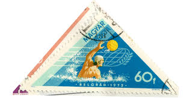 |
| www.shutterstock.com | 2+ Hundred Polo Postage Stamp Royalty-Free Images, Stock ... | 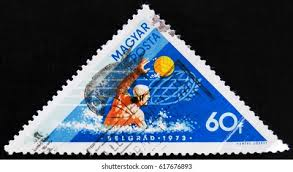 |
| www.dreamstime.com | Hungarian Victories Stock Photos - Free & Royalty-Free Stock ... | 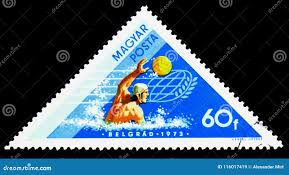 |
| www.alamy.com | Stamp hungary hi-res stock photography and images - Alamy | 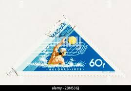 |
| www.facebook.com | Does anyone know something about this imperforate 5 Franc ... | 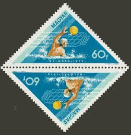 |
| www.ebay.com | Hungary Magyar Posta 1973 Water Sports World Championships ... | 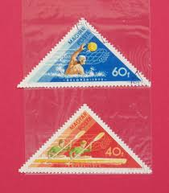 |
| www.alamy.com | Cancelled postage stamp printed by Hungary, that shows Water ... | 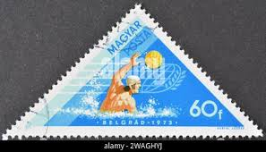 |
| www.buyhungarianstamps.com | 1598-1606,B237 Hungary - 18th Olympic Games, Tokyo, Perf ... | 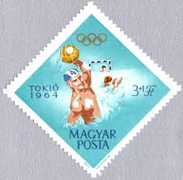 |
| www.etsy.com | Swimming Stamps - Thematic Group of 22 Water Sport Stamps - Etsy | 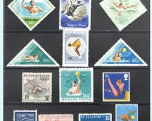 |
| www.mysticstamp.com | 3552-55 - 2002 34c Winter Olympics - Mystic Stamp Company | 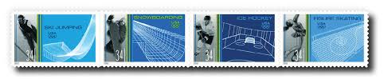 |
| www.dreamstime.com | Vintage Waterpolo Stock Photos - Free & Royalty-Free Stock ... | 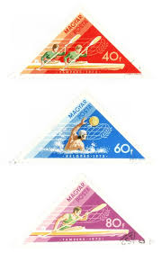 |
| www.shutterstock.com | Urjala Finland 13th September 2025 Three Stock Photo ... | 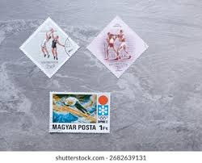 |
| www.mysticstamp.com | 2560 - 1991 29c Basketball Centennial - Mystic Stamp Company | 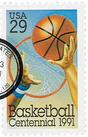 |
| www.buyhungarianstamps.com | 2114-2121 Hungary - 11th Winter Olympic Games, Japan, Set of ... | 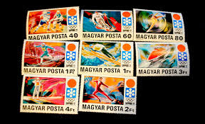 |
| www.waterpoloplanet.com | Peering Into Polo's Past by Andy Burke - Article 0 | 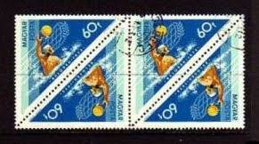 |
| pngtree.com | 99,628+ Water Polo Ball Photos, Pictures And Background ... | 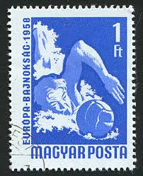 |
| torob.com | خرید و قیمت تمبر مثلثی واترپلو | ترب | 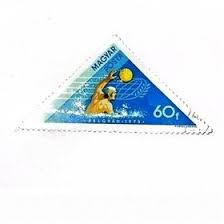 |
| vlv.hu | Vízilabda-történelem – A Népstadion és a vízilabda: bélyegen ... | 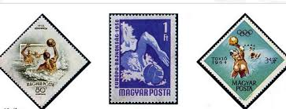 |
| www.ebay.com | HUNGARY,1964, 9th WOMEN'S BASKETBALL CHAMPIONSHIP , SPORTS ... | 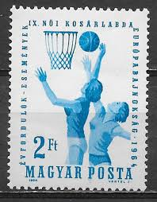 |
| www.etsy.com | 1973 Hungary Sport Stamps – Medals at the Munich Olympic ... | 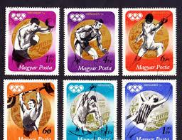 |
| www.bibleinmylanguage.com | MAGYAR POSTA 10Ft / NEMZETKÖZI ÓCEÁN KIÁLLÍTÁS ... | 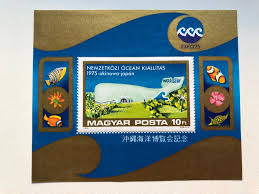 |
| www.manresa-sj.org | Jesuits in Hungary | 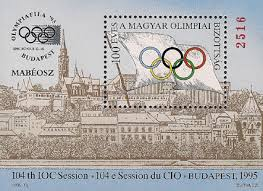 |
| www.freestampcatalogue.com | Stamps from Hungary with the theme Olympic Winter Games ... | 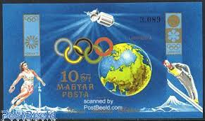 |
| www.gettyimages.com | 466 1982 Olympics Stock Photos, High-Res Pictures, and ... | 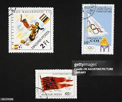 |
| postalmuseum.si.edu | Basketball | National Postal Museum | 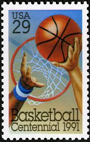 |
| www.skateguardblog.com | Skate Guard Blog: The 1963 European Figure Skating Championships |  |
| www.alamy.com | A stamp printed in Hungary, dedicated to the 1st World Wine ... | 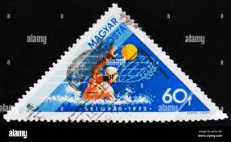 |
| www.hipstamp.com | Hungary Stamp:1956- SC#1160//7-16th Olympic Games Melbourne ... | 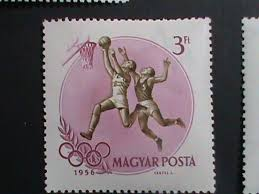 |
| www.osta.ee | Ungari 1973, veespordialade MM, veepall. (221686230) - Osta.ee | 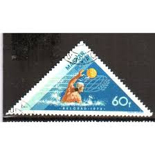 |
| aukro.cz | Staré známky-Maďarsko | Aukro | 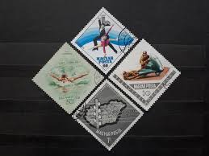 |
| www.youtube.com | Old/Rare Postage Stamps From Hungary - YouTube | 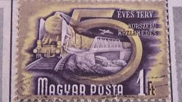 |
| www.reddit.com | Found a bunch of stamps from North Korea today : r/philately | 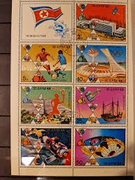 |
| www.ma-shops.com | Ungarn 3222-29 A/B verteilt auf 8 Briefe als Einschreiben ... | 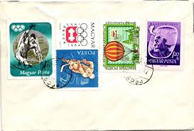 |
| www.leboncoin.fr | Enveloppe 1er jour / timbres "Basket" USA - Hongrie - Collection | 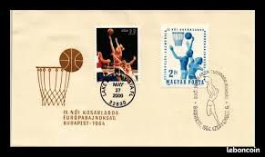 |
| www.facebook.com | How to value and sell stamps from around the world in South ... | 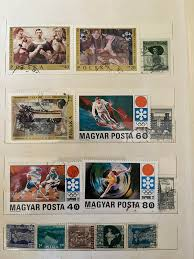 |
| colnect.com | Stamp: Waterpolo (Romania(Summer Olympic Games 1956 ... | 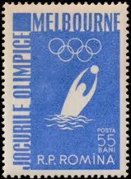 |
| atcoordinates.info | Maps in Miniature: Geography on Postage Stamps | At These ... | 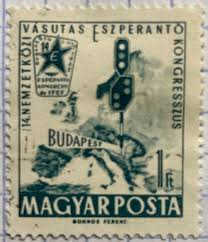 |
| shopee.tw | 貝爾格萊德試管嬰兒哪些(微信號18244999618)馬提尼克代孕費用 ... | 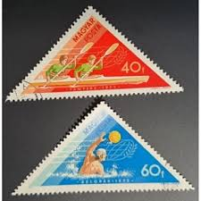 |
| www.skateguardblog.com | Skate Guard Blog: A Short History Of Skating Stamps | 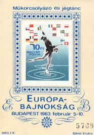 |
| www.instagram.com | Photo by Jaime Varela Borja (@jaimevarelaborja) · February ... | 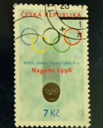 |
| en.wikipedia.org | 1973 World Aquatics Championships - Wikipedia | 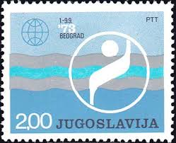 |
| www.buyhungarianstamps.com | 3334-3337 Hungary - 1992 Summer Olympics, Barcelona (MNH ... | 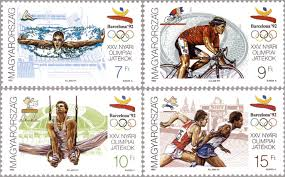 |
| postalmuseum.si.edu | Playing to Win | National Postal Museum | 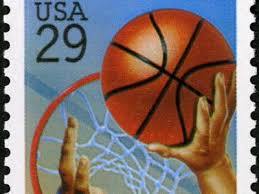 |
| www.reddit.com | 1969 Hungarian "From the Earth to the Moon" stamp. One of my ... | 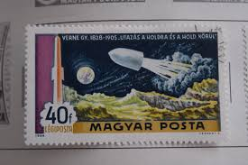 |
| www.manresa-sj.org | Jesuits in Hungary | 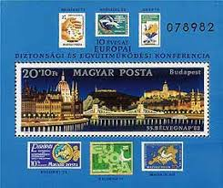 |
| findyourstampsvalue.com | Value of united states postal service souvenir mint set ... | 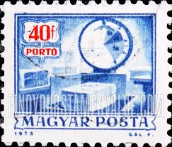 |
| www.ebay.com | HUNGARY-2019. SPECIMEN 150th anniversary of the Hungarian ... | 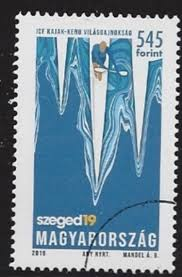 |
| www.filaportal.net | 1948. BÉLYEGNAP 1083 elsőnapi -o- (z2349) szép tétel, kat ... | 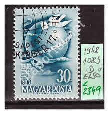 |
| www.hungarianstamps.com | Winter Newsletter 2023: New Stamp Issues of Eastern Europe ... | 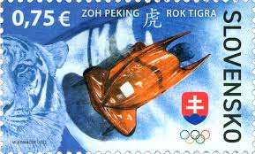 |
| worldstampsproject.org | Postal Tax Stamps – Olympic Committee – World Stamps Project | 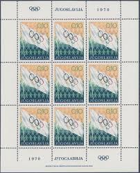 |
| aicolympic.org | 017 - BEACH VOLLEYBALL - AICO | 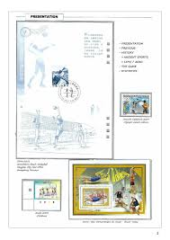 |
| stampdigest.in | Rudolf Bauer – 1900 Paris Olympics Discus Throw Champion ... | |
| www.dreamstime.com | 160 Belgrade Circa Stock Photos - Free & Royalty-Free Stock ... | |
| danstamps.dk | Ungarn. 1964. EM i Basket. UTAKKET, AFA nr. 2021U (o) ** | |
| galeriasavaria.hu | FDC (C4) - 1975. Nemzetközi Óceán Kiállítás blokk - (Kat ... | |
| info.mysticstamp.com | Naismith Publishes Rules of Basketball | Mystic Stamp ... | |
| stamps.sellosmundo.com | Szputnyik-2 (repeated). Hungary Europe ref. 22911 | |
| newfront.ca | MILITARY THEMED POSTAGE STAMPS | |
| www.stampexindia.com | HUNGARY 1981-10th Young Communist League Congress, Budapest ... |